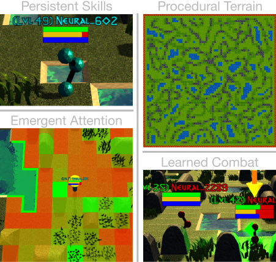

Abstract¶
Abstract¶
Agents in Neural MMO progress persistent skills while exploring procedurally generated terrain and engaging in strategic combat over thousands of timesteps. Our platform is both an environment and a set of tools for visualizing and comparing emergent policies of intelligent agents.
The long-term goal of Neural MMO is to train artificial general intelligence in simulation – that is, agents that scale to the complexity of the real world. The project is divided into research and engineering modules that cleanly segment this objective into concrete and approachable research and engineering tasks: agents that scale to the complexity of their environment and environments that scale to the complexity of the real world.
This dual problem formulation is core to the guiding ideology of the project. Depending on your own personal conception of where the field is as the moment, this may seem like a practical philosophy, AGI cultism, or anything in between. Regardless, see this [Two Pager] for a more thorough overview of the project approach and objective.
The discussion of failure modes below is mostly intended to dissuade skepticism, which thus far I’ve found correlates perfectly with lack of familiarity with MMOs. If you are very familiar with MMOs + current AI research and are still skeptical, please contact me on the Discord – I’d love to hear your views.
Failure Modes¶
Evaluation can be somewhat difficult in our setting but is not a major blocker. For smaller experiments, we find population size and resource utilization to be reasonable metrics of success. For larger experiments with sufficient domain randomization, Tournaments (as described in the accompanying paper) allow for cross validation of approaches.
- We are currently aware of three failure cases for the project:
Computational infeasibility
“Agents that scale to their environment” is too hard
“Environments that scale to the real world” is too hard
The first failure case is a serious risk, but is shared among all areas of the field. This project is not uniquely compute intensive – in fact, it is one of few environments where it is straightforward to train reasonable policies on a single CPU. If scale is the main issue here, it is likely shared among most if not all other approaches.
- The second problem is probably most familiar to researchers as exploration. Given a cold start, how can agents bootstrap both to better policies and to better exploration strategies? This is a hard problem, but it is unlikely to kill the project because:
This is independently an important problem that many researchers are already working on already
The environment of this project is designed collaboratively to assist agents early on in learning, rather than adversarially as a hard benchmark
[Recent] [projects] have demonstrated success at scale.
The third problem probably appears most likely to many researchers, but least likely to anyone who has spent a significant amount of time in MMOs. Here is a map of the NYC subway:

Actually, it’s a quest map of Runescape, a particular MMO that our environment is loosely based upon. Each quest is a puzzle in itself, takes anywhere from several minutes to several hours to complete, is part of an interconnected web of prerequisites of other quests, and provides different incentives for completion ranging from equipment to unlockable content to experience in a tightly connected set of skills:


In a massive open world:

The most complex class of games considered to date is MOBAs (Massive Online Battle Arenas, e.g. Dota, Quake CTF), which are round based, take on order of an hour, and are mechanically intensive. Achieving 99 in all skills and acquiring the best gear in Runescape takes, at minimum, several thousand hours. In a tournament setting where attacking other players is allowed everywhere, moment-to-moment gameplay is less important than balancing the risks and rewards of any potential strategy–especially in the presence of hundreds of other players attempting to do the same. There is almost certainly still a complexity gap from MMOs to the real world, but we believe it is much smaller than that in environments currently available.
While our environment is nowhere near the level of complexity of a real MMO yet, it does contain key properties of persistence, population scale, and open-endedness. As agents begin to reach the ceiling of the current environment, we plan on continuing development to raise the ceiling.